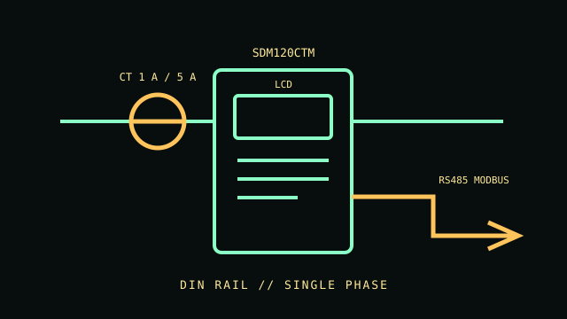

[ SINGLE-PHASE CT ENERGY METER // SDM120CTM ]
Eastron SDM120CTM
Compact single-phase DIN-rail meter with external current transformer input, LCD readout and RS485 Modbus RTU. This is the Modbus CT model, not the Mbus or pulse-only variant.

IDENTIFICATION: Record the CT primary ratio and 1 A or 5 A secondary selected in the meter configuration; an incorrect ratio invalidates readings.
Specifications & compatibility
| Exact model / function | Eastron SDM120CTM, single-phase multifunction energy meter, CT-operated RS485 Modbus version. |
|---|---|
| Measured metrics | Active and reactive energy, voltage, current, active/reactive/apparent power, power factor, frequency and demand. |
| Voltage / phase | 230 V nominal single-phase; operating range 176–276 V AC in the cited series datasheet. |
| Current range / accuracy | External CT secondary 1 A or 5 A; set the CT ratio for the installed sensor. Active energy Class 1 and reactive energy Class 2 per manufacturer series specifications. |
| Display / network / output | Backlit LCD; RS485 Modbus RTU and pulse output. Check the selected register map and pulse configuration in the manual. |
| Form factor | 18 mm DIN-rail enclosure for a distribution board or control cabinet. |
| Host compatibility | Any properly configured RS485 Modbus RTU host or data logger; no host operating system is required by the meter. |
| Electrical safety | Meter input, CT secondary and auxiliary terminals must be wired as in the model manual. Use a qualified installer, isolate before work, and never open-circuit an energized CT secondary unless its instructions explicitly permit it. |
Installation & archival notes
- Keep exact CT ratio, phase assignment, communication address and baud rate with every export.
- Do not apply the direct-connected SDM120 model's current range to this CT-operated variant.
- Use overcurrent protection and enclosure practices required by the installation; the meter itself is not a protective device.
Manufacturer sources
- Eastron — SDM120CTM product pageModel identity, interface and measurement overview.
- Eastron — SDM120CT series datasheetElectrical operating range, input configuration and accuracy class.
- Eastron — SDM120CTM user manualRS485 setup, CT ratio configuration and safety-critical wiring instructions.